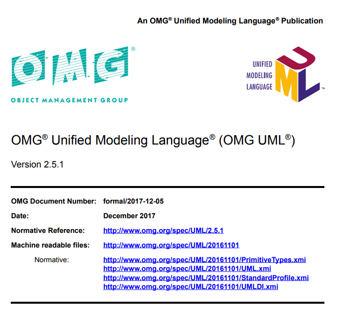

<!doctype html>
<html>
	<head>
		<meta charset="utf-8">
		<meta name="viewport" content="width=device-width, initial-scale=1.0, maximum-scale=1.0, user-scalable=no">

		<title>State Machines Battlefield - Naive vs STL vs Boost</title>

		<link rel="stylesheet" href="reveal.js/css/reveal.css">
    <link rel="stylesheet" href="reveal.js/css/theme/league.css" id="theme">
    <link rel="stylesheet" href="extensions/plugin/line-numbers/line-numbers.css">
    <link rel="stylesheet" href="extensions/css/highlight-styles/zenburn.css">
    <link rel="stylesheet" href="extensions/css/custom.css">

		<script>
			var link = document.createElement( 'link' );
			link.rel = 'stylesheet';
			link.type = 'text/css';
			link.href = window.location.search.match( /print-pdf/gi ) ? 'css/print/pdf.css' : 'css/print/paper.css';
			document.getElementsByTagName( 'head' )[0].appendChild( link );
		</script>

		<meta name="description" content="State Machines Battlefield - Naive vs STL vs Boost">
		<meta name="author" content="Kris Jusiak">
		<meta name="apple-mobile-web-app-capable" content="yes">
		<meta name="apple-mobile-web-app-status-bar-style" content="black-translucent">
	</head>

	<body>
		<div class="reveal">
			<div class="slides">
          <section data-markdown=""
                   data-separator="^====+$"
                   data-separator-vertical="^----+$">
					<script type="text/template">

#### CppCon, 2018

---

## State Machines Battlefield
## Naive vs STL vs Boost

---

Kris Jusiak, Quantlab Financial

#### [kris@jusiak.net](mailto:kris@jusiak.net) | [@krisjusiak](https://twitter.com/krisjusiak) | [linkedin.com/in/kris-jusiak](https://www.linkedin.com/in/kris-jusiak)

==============================================================================

## Outline

* Motivation
* Connection example
* UML-2.5
  * State Machine
* Showcase
   * Naive
     * If/Else
     * Switch/Enum
     * Virtual (design pattern)
   * STL
     * std::variant (C++17)
     * coroutines (C++20)
   * Boost
     * Boost.Statechart
     * Boost.MetaStateMachine (MSM)
   * [Boost].StateMachineLanguage (SML)
     * Overview
     * Performance
       * Dispatching strategies
         * Branch / switch / jump table / fold expressions
* Summary

----

### Motivation

* SM promotes better design
  * Compliant with UML documentation

* SM creates easier to maintain code
  * Declarative approach / Expresses `WHAT`, not `HOW`!

* SM creates easy to test code
  * Can be tested in isolation without trying to reach all conditional branches

```gherkin
Feature: Connection

  Scenario: Establish connection 1/2
    Given I have a connection handler
     When I receive a connect request
     Then I should establish connectivity

  Scenario: Establish connection 2/2
    Given I have established connectivity
     When I receive a established ack
      And The ack is valid
     Then I'm connected
```

### Introduction - UML-2.5 - State Machine



https://www.omg.org/spec/UML/2.5.1/PDF

----

### Introduction - UML-2.5 - State Machine


| |
|-|
|Transition - Unified Modeling Language (UML)|
|<center></center>|

---

Benchmarks

#### CXXFLAGS
```
$CXX -std=c++1z -O3 -flto -fno-exceptions -DNDEBUG benchmark.cpp
```


----

### Transitions - Connection


----

#### Transitions - Connection

```cpp
* -> Disconnected : connect / establish              -> Connecting
```
<!-- .element: style="margin-left:0%; width:100%" -->

```cpp
     Connecting   : established                      -> Connected
```
<!-- .element: style="margin-left:0%; width:100%" -->

```cpp
     Connected    : ping [ is_valid ] / resetTimeout
```
<!-- .element: style="margin-left:0%; width:100%" -->

```cpp
     Connected    : timeout                          -> Connecting
```
<!-- .element: style="margin-left:0%; width:100%" -->

```cpp
     Connected    : disconnect                       -> Disconnected
```
<!-- .element: style="margin-left:0%; width:100%" -->

<center></center>

----


### Performance tuning

----

#### Policies allow to change State Machine implementation at compile time

```cpp
// Don't pay for what you don't use!
sml::sm<Connection, Policies...> sm{};
```

----

#### Thread safe policy enables/disabled thread safety

```cpp
sml::sm<Connection, sml::thread_safe<std::mutex>> sm{};
```

----

#### Exception handling policy requires a compilation flag

```
Exception handling is only available if NOT compiled with
  `-fno-exceptions` or
  `BOOST_SML_DISABLE_EXCEPTIONS`
```

----

#### Dispatch policy changes event dispatching strategy

| Name | POLICY |
| - | - |
| Jump Table | `jump_table` |
| Switch | `switch_stm` |
| If/else | `branch_stm` |
| Fold expressions | `fold_expr` |

```cpp
sml::sm<Connection, sml::dispatch<sml::back::policies::POLICY>> sm{};
```
<!-- .element: style="margin-left:0%; width:100%" -->

----

#### Front-End - Transition Table

```cpp
static_assert(std::is_same<
  decltype(
    make_transition_table( // front-end
      * "Disconnected"_s + connect / establish = "Connecting"_s,
        "Connecting"_s   + established         = "Connected"_s
    )
  ),
  transition_table< // back-end
    // --------------------------------------------------------------------------------- //
    //         src_state              dst_state            event        guard   action   //
    // --------------------------------------------------------------------------------- //
    transition<state<"Disconnected">, state<"Connecting">, connect,     always, establish>,
    transition<state<"Connecting">,   state<"Connected">,  established, always, none>
  >
>{});
```
<!-- .element: style="margin-left:-13%; width:125%" -->

----

#### Back-End - Generated at Compile Time Mapping per Event and State

#### mappings_t
```cpp
pair<connect,
  type_list<
    transitions<
      transition<state<"Disconnected">, state<"Connecting">, connect, always, establish>
    >,
    transitions<>, // Connecting (unexpected event)
    transitions<>  // Connected  (unexpected event)
  >
>
```
<!-- .element: style="margin-left:-13%; width:125%" -->

```cpp
pair<established,
  type_list<
    transitions<>, // Disconnected (unexpected event)
    transitions<
      transition<state<"Connecting">, state<"Connected">,  established, always, none>
    >,
    transitions<>  // Connected (unexpected event)
  >
>
```
<!-- .element: style="margin-left:-13%; width:125%" -->

----

#### Dispatch policy - Process Event

```cpp
template<class TransitionTable>
class sm {
 public:
  constexpr void process_event(const TEvent& event) {
    dispatch_policy::dispatch(
      current_state_,
      event,
      typename TransitionTable::states{}
    );
  }

 private:
  state_t current_state_{};
};
```

----

#### Dispatch policy - jump table

```cpp
struct jump_table {
  template <class TEvent, class... TStates>
  constexpr auto dispatch(State &current_state,
                          const TEvent &event,
                          type_list<TStates...>) {
    using dispatch_table_t = bool (*)(const TEvent&, State &);
    constexpr static dispatch_table_t dispatch_table[] = {
      &mappings_t<TStates>::template execute<TEvent>...
    };
    return dispatch_table[current_state](event);
  }
};
```

----

#### Dispatch policy - jump table

<iframe class="stretch" data-src="https://godbolt.org/g/BKHgh9" />

----

#### Dispatch policy - switch

```cpp
struct switch_stm {
  template <class TEvent>
  constexpr auto dispatch(State &, const TEvent &, type_list<>) { }

  template <class TEvent, class TState, class... TStates>
  constexpr auto dispatch(State &current_state,
                          const TEvent &event,
                          type_list<TState, TStates...>) {
    switch (current_state) {
      default: return dispatch(current_state, type_list<TStates...>{});
      case N: return mappings_t<TState>::template execute<TEvent>(event);
    }
  }
};
```
<!-- .element: style="margin-left:1%; width:105%" -->

----

#### Dispatch policy - switch

<iframe class="stretch" data-src="https://godbolt.org/g/zFF7LM" />

----

#### Dispatch policy - if/else

```cpp
struct branch_stm {
  template <class TEvent>
  constexpr auto dispatch(State &, const TEvent &, type_list<>) { }

  template <class TEvent, class TState, class... TStates>
  constexpr auto dispatch(State &current_state,
                          const TEvent &event,
                          type_list<TState, TStates...>) {
    return current_state == N
      ? mappings_t<TState>::template execute<TEvent>(event)
      : dispatch(current_state, event, type_list<TStates...>{});
  }
};
```
<!-- .element: style="margin-left:0%; width:100%" -->

----

#### Dispatch policy - if/else

<iframe class="stretch" data-src="https://godbolt.org/g/cJvKYB" />

----

#### Dispatch policy - fold expressions

```cpp
struct fold_expr {
  template <auto... Ns, class TEvent, class... TStates>
  constexpr auto dispatch_impl(State &current_state,
                              index_sequence<Ns...>,
                              const TEvent &event,
                              type_list<TStates...>) {
    return ((current_state == Ns
      ? mappings_t<TStates>::template
          execute<TEvent>(event)
      : false
    ) || ...);
  }
};
```

----

#### Dispatch policy - fold expressions

<iframe class="stretch" data-src="https://godbolt.org/g/vzL8w4" />

----

#### Performance tuning - Dispatch policy

<iframe class="stretch" data-src="https://godbolt.org/g/bviBBB" />

==============================================================================

## [Boost].SML vs Boost.MSM-eUML vs Boost.Statechart

----

## Overview

----

| Library     | MSM-lite    | Boost.MSM-eUML  | Boost.Statechart |
| --------    | ----------- | --------------- | ---------------- |
| Standard    | C++14       | C++98/03        | C++98/03         |
| Version     | 1.0.1       | 1.61            | 1.61             |
| License     | Boost 1.0   | Boost 1.0       | Boost 1.0        |
| Linkage     | header only | header only     | header only      |

----

##Implementation details

----

| Library            | MSM-lite    | Boost.MSM-eUML  | Boost.Statechart |
| ------------------ | ----------- | --------------- | ---------------- |
| UML                | 2.0         | 2.0             | 1.5              |
| RTTI               | -           | -               | ✓                |
| Exceptions         | -           | -               | ✓                |
| Memory Allocations | -           | -               | ✓                |

----


## Features

----

## UML features

----

| Library              | MSM-lite | Boost.MSM-eUML | Boost.Statechart |
| -------------------- | -------- | -------------- | ---------------- |
| Transition           | ✓        | ✓              | ✓                |
| Anonymous transition | ✓        | ✓              | ✓                |
| Internal transition  | ✓        | ✓              | ✓                |
| Local transitions    | -        | -              | -                |

----

| Library              | MSM-lite | Boost.MSM-eUML | Boost.Statechart |
| -------------------- | -------- | -------------- | ---------------- |
| State entry/exit     | ✓        | ✓              | ✓                |
| Guard                | ✓        | ✓              | ✓                |
| Action               | ✓        | ✓              | ✓                |
| Event defering       | ~        | ✓              | ✓                |
| Error handling       | ✓        | ✓              | ✓                |

----

| Library              | MSM-lite | Boost.MSM-eUML | Boost.Statechart |
| -------------------- | -------- | -------------- | ---------------- |
| Initial state        | ✓        | ✓              | ✓                |
| Terminate State      | ✓        | ✓              | ✓                |
| Explicit entry       | ✓        | ✓              | ✓                |
| Explicit exit        | -        | ✓              | ✓                |
| Fork                 | -        | ✓              | -                |

----

| Library              | MSM-lite | Boost.MSM-eUML | Boost.Statechart |
| -------------------- | -------- | -------------- | ---------------- |
| Orthogonal regions   | ✓        | ✓              | ✓                |
| Sub / Composite      | ✓        | ✓              | ✓                |
| Shallow History      | ✓        | ✓              | ✓                |
| Deep History         | ~        | ~              | ✓                |


----

## Non-UML features

----

| Library              | MSM-lite | Boost.MSM-eUML | Boost.Statechart |
| -------------------- | -------- | -------------- | ---------------- |
| Any event            | -        | ✓              | -                |
| Flags                | -        | ✓              | -                |
| Interrupt state      | -        | ✓              | -                |
| State Visitor        | ✓        | ✓              | ✓                |
| Serialization        | -        | ✓              | -                |
| Dispatcher           | ✓        | -              | -                |
| Asynchronous SM      | -        | -              | ✓                |

----

### Summary

----

### If you like it or not, your code won't be stateless (most likely)

----

### Implicit/Hand written state machines are hard to
* Reason about
 * Maintain / Extend
 * Test

----

### State Machines are more than just simple transitions
* [UML-2.5](http://www.omg.org/spec/UML/2.5/)

----

### Leveraging Zero-cost libraries will boost your design and/or performance

==============================================================================

### Questions?

| [Boost].SML |  |
| ------- | ------------- |
| Documentation | http://boost-experimental.github.io/sml |
| Source Code | https://github.com/boost-experimental/sml |
| Try it online! | http://boost-experimental.github.io/sml/examples |
<!-- .element: style="margin-left:-13%; width:125%" -->

-

#### [kris@jusiak.net](mailto:kris@jusiak.net) | [@krisjusiak](https://twitter.com/krisjusiak) | [linkedin.com/in/kris-jusiak](https://www.linkedin.com/in/kris-jusiak)
					</script>
				</section>

			</div>
		</div>

		<script src="reveal.js/lib/js/head.min.js"></script>
		<script src="reveal.js/js/reveal.js"></script>

		<script>

			// Full list of configuration options available at:
			// https://github.com/hakimel/reveal.js#configuration
			Reveal.initialize({

        // Display controls in the bottom right corner
        controls: true,

        // Display a presentation progress bar
        progress: true,

        // Display the page number of the current slide
        slideNumber: true,

        // Push each slide change to the browser history
        history: true,

        // Enable keyboard shortcuts for navigation
        keyboard: true,

        // Enable the slide overview mode
        overview: true,

        // Vertical centering of slides
        center: true,

        // Enables touch navigation on devices with touch input
        touch: true,

        // Loop the presentation
        loop: false,

        // Change the presentation direction to be RTL
        rtl: false,

        // Turns fragments on and off globally
        fragments: false,

        // Flags if the presentation is running in an embedded mode,
        // i.e. contained within a limited portion of the screen
        embedded: false,

        // Flags if we should show a help overlay when the questionmark
        // key is pressed
        help: true,

        // Flags if speaker notes should be visible to all viewers
        showNotes: false,

        // Number of milliseconds between automatically proceeding to the
        // next slide, disabled when set to 0, this value can be overwritten
        // by using a data-autoslide attribute on your slides
        autoSlide: 0,

        // Stop auto-sliding after user input
        autoSlideStoppable: true,

        // Enable slide navigation via mouse wheel
        mouseWheel: true,

        // Hides the address bar on mobile devices
        hideAddressBar: true,

        // Opens links in an iframe preview overlay
        previewLinks: false,

        // Transition style
        transition: 'convex', // none/fade/slide/convex/concave/zoom

        // Transition speed
        transitionSpeed: 'default', // default/fast/slow

        // Transition style for full page slide backgrounds
        backgroundTransition: 'default', // none/fade/slide/convex/concave/zoom

        // Number of slides away from the current that are visible
        viewDistance: 3,

        // Parallax background image
        parallaxBackgroundImage: '', // e.g. "'https://s3.amazonaws.com/hakim-static/reveal-js/reveal-parallax-1.jpg'"

        // Parallax background size
        parallaxBackgroundSize: '', // CSS syntax, e.g. "2100px 900px"

        // Number of pixels to move the parallax background per slide
        // - Calculated automatically unless specified
        // - Set to 0 to disable movement along an axis
        parallaxBackgroundHorizontal: null,
        parallaxBackgroundVertical: null,

				// Optional reveal.js plugins
				dependencies: [
					{ src: 'reveal.js/lib/js/classList.js', condition: function() { return !document.body.classList; } },
					{ src: 'reveal.js/plugin/markdown/marked.js', condition: function() { return !!document.querySelector( '[data-markdown]' ); } },
					{ src: 'reveal.js/plugin/markdown/markdown.js', condition: function() { return !!document.querySelector( '[data-markdown]' ); } },
					{ src: 'reveal.js/plugin/highlight/highlight.js', async: true, callback: function() { hljs.initHighlightingOnLoad(); } },
					{ src: 'reveal.js/plugin/zoom-js/zoom.js', async: true },
					{ src: 'reveal.js/plugin/notes/notes.js', async: true },
          { src: 'extensions/plugin/line-numbers/line-numbers.js' }
				]
			});
		</script>
	</body>
</html>
